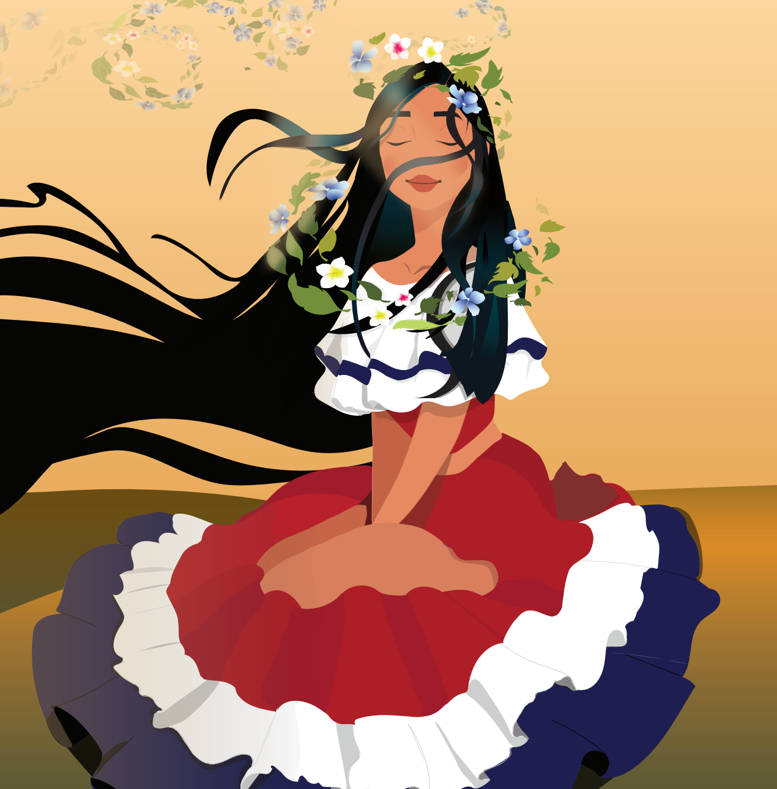
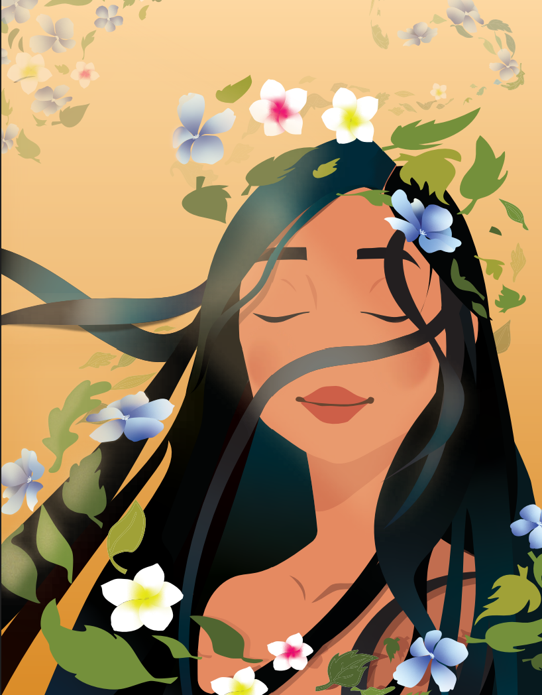

Pocajontas
Illustration
September 2026
Project Overview
I created this piece for my Digital Illustration class. The assigment was to recreate a children's story in a different culture setting.
Concept
I recreated Pocahontas (Pocajontas in spanish) in a Caribbean setting inspired by my Dominican heritage. I used a traditional Dominican folkloric dress, native flowers, and a bowl filled with fruit to bring details from the culture into the illustration. The warm colors of the sunset reflect the tropical climate and give the scene a golden glow.
Other pieces


Medium
Adobe Illustrator.